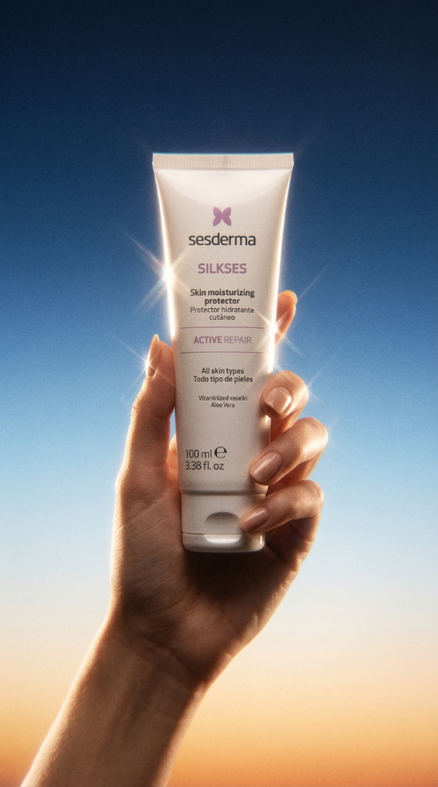
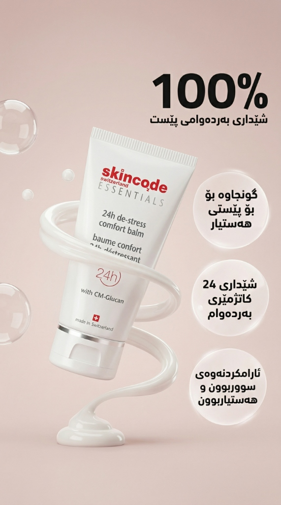
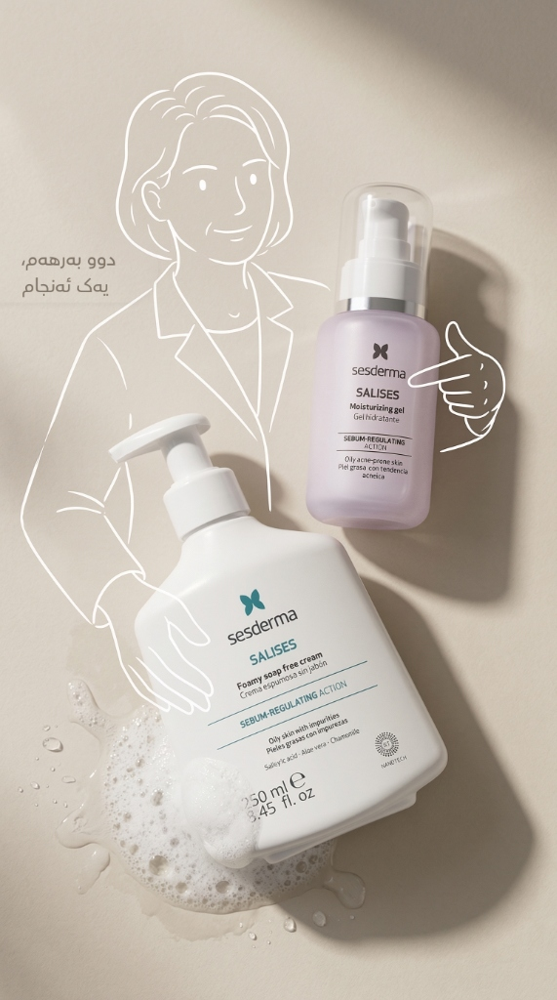

Paid Media & Ads
Data-driven, accountable growth.
Over $100,000 in Meta Ads managed at Digital Vision, driving scalable customer acquisition, strict budget pacing, and continuous creative testing.
Paid Media Specialist · AI Content Creator · Graphic Designer · Erbil
I'm Ahmad — a 24-year-old digital operator based in Erbil with 2+ years of hands-on agency experience. I manage $100K+ in Meta Ads campaigns, create commercial graphic design and 3D product visuals, direct viral AI video content using Veo and Seedance 2.5, and run end-to-end e-commerce order operations.

$100K+ Paid Ads · AI Video · Graphic Design · Operations
Open for workFor over two years, I've operated across agency and creator environments in Erbil—directing performance ad campaigns, designing commercial brand assets, producing viral AI-driven short-form video, and running zero-error e-commerce order fulfillment. Everything I build is centered on visual clarity, measurable conversions, and dependable follow-through.
Explore full CV & backgroundPaid Media & Ads
Over $100,000 in Meta Ads managed at Digital Vision, driving scalable customer acquisition, strict budget pacing, and continuous creative testing.
AI Video & Content
2+ years directing AI short-form content with Google Veo, Seedance 2.5, and Nano Banana at @pov.kurds—testing retention hooks, formats, and high-engagement visuals.
Graphic Design & Ops
Designing high-converting ad creatives for global brands like Sesderma and Skincode, alongside rigorous order database management and daily bookkeeping.
2+ years of hands-on agency execution across performance advertising, commercial graphic design, generative AI video production, social media management, and e-commerce logistics.
Cumulative Meta Ads spend managed with daily optimization and measurable ROI
Agency paid media, commercial graphic design, and social media management
Directing generative AI short-form video using Google Veo & Seedance 2.5
Independent creator channel producing AI-driven video & cultural formats
Plan, build, and optimize high-volume Meta Ads campaigns. Direct campaign structures, audience segmentation, rigorous A/B creative testing, and daily budget pacing across more than $100,000 in cumulative client spend.
Design commercial advertising creatives, promotional campaign posters, social banners, and product staging visuals for international skincare and cosmetics brands including Sesderma and Skincode.
Oversee multi-platform brand presence, content calendar planning, feed aesthetic direction, copywriting, and audience engagement strategies across diverse client accounts.
Handle daily financial transaction logging, vendor invoice verification, and internal ledger reconciliation, ensuring complete fiscal transparency and error-free records.
Found and direct @pov.kurds. Produce viral short-form video combining cultural themes and cinematic visuals with cutting-edge generative AI models. Engineer hooks, pacing, and retention tactics.
Mastery of modern generative AI video tools including Google Veo, Seedance 2.5, and Nano Banana integrated into professional video editing workflows to generate surreal, cinematic, and commercial-grade assets rapidly.
Manage publishing schedules, analyze viewer retention curves, optimize algorithm distribution on Instagram Reels and TikTok, and build an active community.
Manage the primary order database and real-time inventory counts. Coordinate picking, order verification, packaging, and courier handoff, ensuring rapid dispatch with zero discrepancies.
Directed main-booth operations at the 3-day 'Are You Healthy?' exhibition. Managed on-site visitor flow, coordinated the event staff, and delivered engaging product demonstrations.
Meta Ads Manager, audience segmentation, budget pacing, creative testing, ROAS / CPA monitoring, and direct conversion scaling.
Directing modern generative video pipelines (Google Veo, Seedance 2.5, Nano Banana), short-form storytelling, and viral social channel strategy.
Commercial advertising posters, skincare brand staging, packaging visuals, e-commerce order management, and financial recordkeeping.
Commercial advertising creatives designed for international skincare and cosmetics brands at Digital Vision. Crafted with precise product staging, clean typography, and persuasive visual hooks engineered for paid social performance.

Seasonal campaign creative built around cold-weather protection. High-contrast ice-blue art direction with dynamic splash and ice elements framing the hero skincare tube.

Clean minimalist aesthetic highlighting Swiss dermatological heritage. Soft organic petal staging and crisp product-focus balancing luxury texture with clinical credibility.

Fresh botanical composition emphasizing natural purifying properties for acne-prone skin. Lush leaf framing, earthy soil base, and vibrant green lighting.
Original video productions created and animated independently — from 3D supplement product visuals to widescreen cinematic worldbuilding.
Atmospheric widescreen animation featuring four warriors overlooking mountain peaks and an ancient fortress at sunrise, with custom environment lighting, animated cloaks, and mountain vistas.
3D product motion graphics showcasing the Ferrobine supplement vial with dynamic neon pedestal lighting, smooth camera rotation, and animated cap mechanics.
Mixed-media animation combining realistic surgical theater environments with symbolic origami character animation, bringing visual emotion to healthcare spaces.
Building practical web dashboards, client performance reports, and internal tools that turn operational and advertising metrics into clear, decision-ready data.
Selected personal market notes and captures. For context, not financial advice.
A documented setup centered on a defined range before a sharp upside move. The original chart captures the structure and projected path.
A long-range gold chart note, mapping the broader trend, key reaction areas, and a personal macro interpretation.
Geopolitics / event markets
A February 2026 note on a US-Iran event market, captured alongside the thesis shared at the time. It is a reminder that timing, narrative, and probability are deeply connected.
Platform-shared captures from selected positions. Past performance is not indicative of future results; all trading carries risk.
“The thesis only matters if you can stay disciplined while it plays out.”
Personal market journalDirect contact & opportunities
Open to conversations around performance advertising, commercial graphic design, AI video creation, e-commerce operations, or market opportunities.